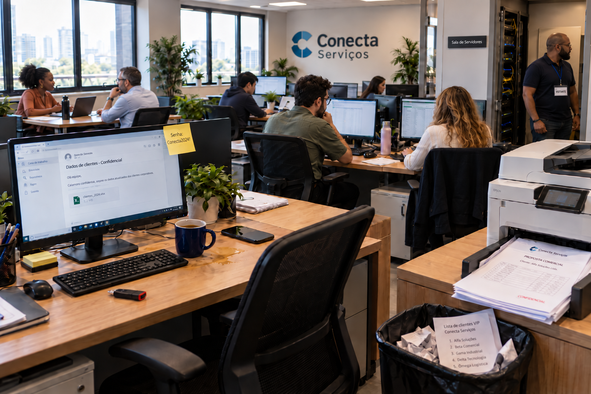

Uma visita à Conecta Serviços
A empresa tem oito funcionários, seis computadores, um notebook usado fora da empresa, servidor MySQL, Wi-Fi, sistema de pedidos, arquivos de clientes, e-mail e cópias de segurança.
Você foi convidado a observar o ambiente e propor melhorias. Não presuma que todo objeto representa uma falha: registre o que realmente pode ser visto e o que precisaria ser confirmado com a equipe.
Atividade visual — encontre os riscos de segurança
Antes de começar o diagnóstico formal, observe a cena como se você tivesse acabado de entrar no escritório da Conecta Serviços.

Observe antes de abrir a conferência. Identifique pelo menos quatro indícios de risco que merecem investigação. Para cada um, responda:
- O que você viu na imagem?
- O que você precisa confirmar com a empresa?
- Qual informação, equipamento ou serviço poderia ser afetado?
- Que cuidado poderia reduzir o risco?
Não invente uma senha que não consegue ler, não afirme que um pendrive está infectado e não conclua que uma pessoa é invasora apenas pela aparência.
Conferir as situações observadas
Compare suas respostas com seis situações planejadas na fotografia. Algumas são falhas visíveis; outras pedem investigação.
- Senha no post-it: a anotação presa ao monitor revela uma credencial. É exposição direta de informação de autenticação; o cuidado é usar meios de armazenamento de senhas adequados e não deixar credenciais visíveis.
- Tela com informações confidenciais: uma estação aparentemente desocupada exibe dados de clientes. É preciso confirmar se houve afastamento sem bloqueio; adotar bloqueio de tela ao se ausentar.
- Líquido derramado: há bebida e líquido sobre a mesa perto de equipamentos. É um risco físico de dano e interrupção das atividades; manter líquidos afastados.
- Impressão confidencial: documentos identificados como confidenciais estão na saída da impressora. Podem ser vistos ou recolhidos indevidamente; restringir impressão, recolher imediatamente e controlar o acesso.
- Lista de clientes no lixo: um documento identificável aparece no descarte comum. Deve-se verificar sua classificação e aplicar descarte adequado quando a informação exigir proteção.
- Visitante na sala de servidores: uma pessoa com crachá de visitante está junto a uma sala de servidores aberta. É necessário confirmar sua autorização e acompanhamento; o crachá não comprova acesso autorizado à sala.
Não são erros comprovados: duas pessoas conversando normalmente, um pendrive apenas apoiado na mesa ou alguém trabalhando diante de um computador. Não atribua má intenção sem evidências.
Critério de correção: explique o que a imagem mostra, o risco correspondente e, quando necessário, o fato que deveria ser confirmado. Uma boa resposta não inventa informações ausentes.
1. O que precisa ser protegido?
Liste seis ativos do cenário (inclua informações, sistemas e equipamentos). Para cada um, escreva sua função e uma consequência possível caso deixe de funcionar ou tenha dados expostos.
2. Quais riscos merecem atenção?
Escolha quatro situações, usando observações da imagem e hipóteses que poderiam ser confirmadas em uma visita. Monte este quadro:
| O que foi observado | Risco a verificar | CID afetada | Controle proposto | Como verificar |
|---|---|---|---|---|
| Porta da área de equipamentos aberta | Acesso de pessoa não autorizada, se não houver controle | Confidencialidade e disponibilidade | Controle de entrada e acompanhamento | Verificar regras e registros de acesso |
Conferência: não confunda um indício com a comprovação de um incidente. O exemplo está preenchido; complete os outros três com justificativas próprias.
3. O que faria primeiro?
Escolha os dois riscos mais urgentes. Justifique probabilidade e impacto como baixos, médios ou altos, usando os critérios da Etapa 2. Proponha duas medidas complementares para cada risco e diga que evidência mostraria se elas foram aplicadas.
4. Como responder a uma falha?
Considere um segundo cenário, independente da fotografia: um funcionário informa que digitou sua senha em um site suspeito, e a equipe vê um alerta de acesso incomum. Escreva as primeiras ações de comunicação, contenção, preservação de evidências e investigação. Separe fatos de hipóteses.
Explique também como a empresa poderia recuperar os dados após uma exclusão acidental e por que uma réplica não substitui backup.
5. Como transformar melhorias em rotina?
Redija quatro regras verificáveis para a empresa: uma sobre pessoas, uma sobre ambiente físico, uma sobre tecnologia e outra sobre responsabilidades. Escolha uma dessas regras e escreva um procedimento curto: quando executar, quem executa, quais passos seguir e como conferir o resultado.
6. Entregue um diagnóstico objetivo
Organize sua entrega em seis partes: ativos; riscos e CID; prioridades e controles; resposta ao incidente; recuperação; regras e procedimento. Conclua dizendo qual risco ainda permaneceria mesmo após os controles.
Antes de entregar, confira: suas conclusões estão apoiadas no cenário? Você separou indícios de fatos? As medidas têm responsáveis ou formas de verificação? O documento permite que outra pessoa entenda o raciocínio sem precisar perguntar?
O que aprendemos com a Conecta?
Proteger informações exige reconhecer o que tem valor, entender riscos, escolher medidas proporcionais, verificar o resultado e melhorar continuamente. A CID orienta o objetivo; pessoas, ambiente físico, tecnologia e organização ajudam a colocá-lo em prática.